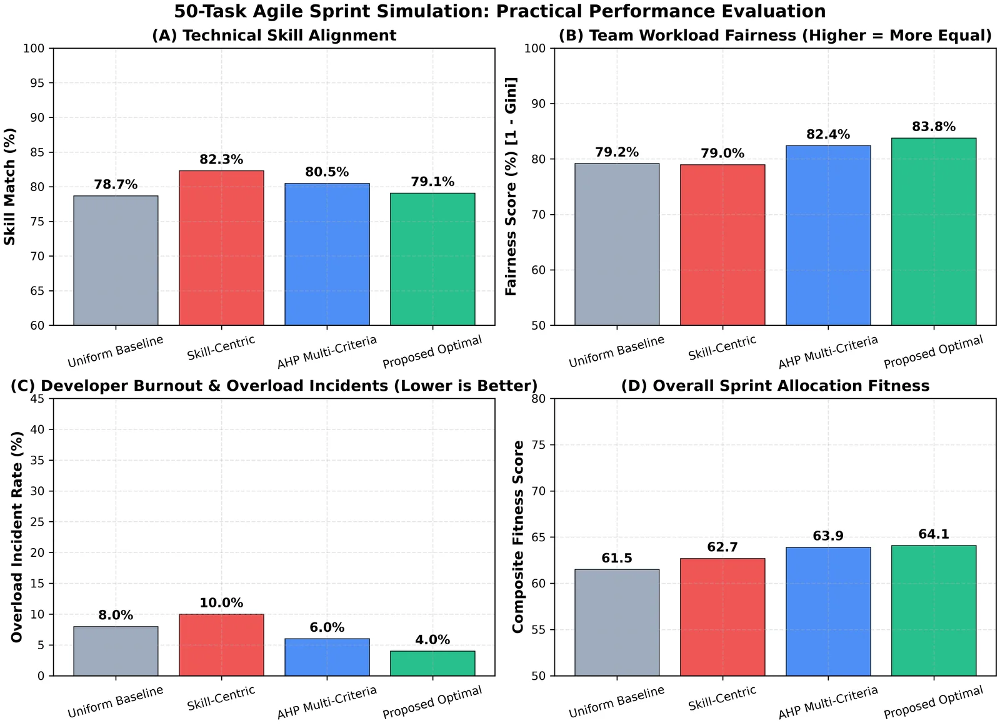
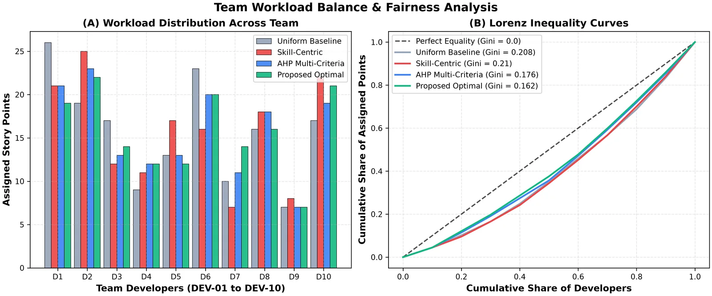
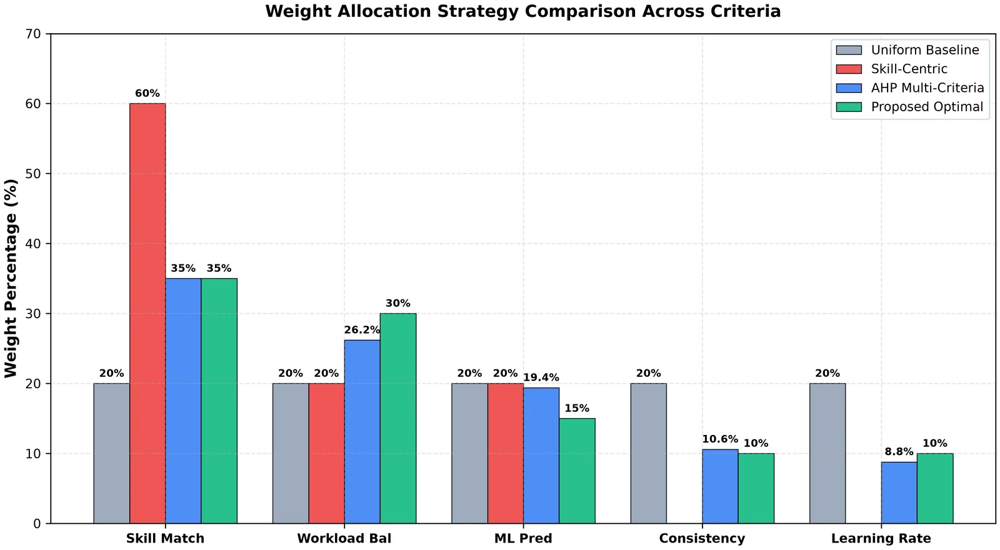
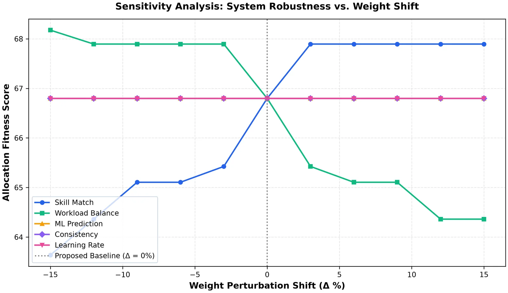

Whoever looks free
Tasks are usually assigned by availability or habit. The strongest developers collect the hardest work and burn out, newer developers rarely get the tasks that would help them grow, and nobody sees the imbalance until velocity drops.
Assignment is a trade-off between goals that pull against each other, and the trade-off is usually made in someone's head.
Expertise is not the whole job
- Developer recommenders optimise for expertise alone [8]; fairness, overload and growth are ignored.
- Where several criteria are combined, the weights are usually set by hand rather than derived and tested.
- Few approaches model how consistent each developer is, or how fast they learn.
What M3 set out to do
Main objective. Rank developers for each task by predicted performance, skill match, workload balance and growth, with weights that are derived and validated rather than guessed.
- Predict each developer's performance on a task with a stacking ensemble.
- Score developers' consistency and learning rate with behavioural models.
- Derive criterion weights with the Analytic Hierarchy Process (consistency ratio below 0.10).
- Refine the weights with simulation-based SLSQP optimisation.
- Return a ranked shortlist with the reasons for each rank.
Predict, weigh, then rank
A stacking ensemble predicts how well each developer would perform on the task [10]. That prediction is blended with three explicit scores: how well their skills match, how loaded they already are, and whether the task would help them grow.
The blend's weights start from pairwise judgements under the Analytic Hierarchy Process [9], accepted only when the consistency ratio is below 0.10, and are then refined by SLSQP optimisation against simulated sprints.
Task and developer profiles
Required skills and size of the task; each developer's skills, history and current load.
Stacking ensemble
Several base models combined by a meta-learner predict each developer's performance on this task.
Skill · workload · growth
Explicit scores for skill match, workload balance and growth opportunity, plus consistency and learning rate.
AHP + SLSQP weights
Weights derived with AHP, then tuned by SLSQP against simulated sprints.
Ranked shortlist
Developers ordered by blended score, each with the reasons behind their place.
Fairer sprints, without giving up much skill
81.0%
Overall sprint success across a ten-sprint simulation. Higher is better.
↑ 14.4 points vs manual allocation
Why this matters
Over ten simulated sprints, assignments ranked by M3 finished more work successfully than manual allocation, greedy skill matching (70.4%) or uniform weights (67.4%).
0.162Gini
Inequality of workload across the team in a 50-task sprint. Lower is fairer.
↓ 22% less unequal than uniform weights
Why this matters
When the strongest developers get every hard task they burn out and others stall. The derived weights spread work more evenly.
4.0%
Share of developers pushed past capacity in a 50-task sprint. Lower is better.
Half the overload of uniform weights
Why this matters
This is the honest trade-off: skill match drops from 82.3% (skill-centric) to 79.1%, and in exchange overload halves and fairness rises to 83.8%.
Overall sprint success, ten-sprint simulation
Percent of sprint goals met · higher is better
| Strategy | Skill match | Workload Gini | Fairness | Overload | Fitness |
|---|---|---|---|---|---|
| Uniform baseline | 78.7% | 0.208 | 79.2% | 8.0% | 61.5 |
| Skill-centric | 82.3% | 0.210 | 79.0% | 10.0% | 62.7 |
| AHP multi-criteria | 80.5% | 0.176 | 82.4% | 6.0% | 63.9 |
| SprintIQ (AHP + SLSQP) | 79.1% | 0.162 | 83.8% | 4.0% | 64.1 |








Simulation results. Developer and task profiles are synthetic; validation with real teams is ongoing.
Where it shows up in SprintIQ
The task assignment assistant shows the ranked shortlist on every task, with Accept, Override and Dismiss.
Screenshot · assignment assistantRanked developers for a task, with skill match, workload and growth reasons.
Screenshot · team workloadThe team workload view the allocation balances against.
What we can't claim yet
- Results come from simulation with synthetic developer and task profiles.
- Skill match is slightly lower than a skill-only strategy (79.1% vs 82.3%); fairness is bought with it.
- AHP judgements reflect the group's priorities; another organisation may weigh the criteria differently.